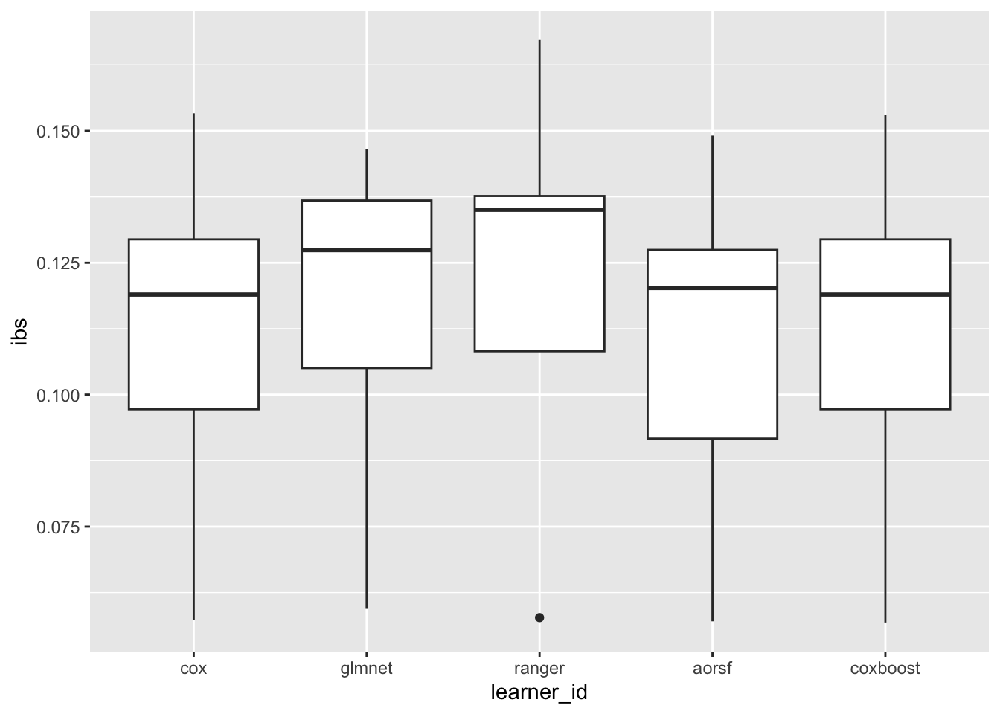

Code
library(mlr3verse)mlr3: Basics{mlr3} is structuredlearners and (built-in) tasksTo get started, we load {mlr3verse}, which will load various packages from the {mlr3} ecosystem:
library(mlr3verse){mlr3} ships with wrappers for many commonly used machine learning algorithms (“learners”).
We can access the list of available learners using the mlr_learners dictionary:
sample(mlr_learners$keys(), 10) [1] "regr.decision_table" "regr.cv_glmnet" "clust.cobweb"
[4] "clust.hclust" "classif.cv_glmnet" "regr.kknn"
[7] "classif.LMT" "classif.JRip" "clust.pam"
[10] "regr.ranger" One example:
lrn("classif.ranger")<LearnerClassifRanger:classif.ranger>: Random Forest
* Model: -
* Parameters: num.threads=1
* Packages: mlr3, mlr3learners, ranger
* Predict Types: [response], prob
* Feature Types: logical, integer, numeric, character, factor, ordered
* Properties: hotstart_backward, importance, multiclass, oob_error,
twoclass, weightsUse lrn("classif.ranger")$help() to view the help page, with links to documentation for parameters and other information about the wrapped learner.
Built-in tasks can be accessed using the mlr_tasks dictionary:
head(as.data.table(mlr_tasks)[, list(key, label, task_type, nrow, ncol, properties)])Key: <key>
key label task_type nrow ncol properties
<char> <char> <char> <int> <int> <list>
1: ames_housing Ames House Sales regr 2930 82
2: bike_sharing Bike Sharing Demand regr 17379 14
3: boston_housing Boston Housing Prices regr 506 18
4: breast_cancer Wisconsin Breast Cancer classif 683 10 twoclass
5: german_credit German Credit classif 1000 21 twoclass
6: ilpd Indian Liver Patient Data classif 583 11 twoclassOne example:
tsk("penguins_simple")<TaskClassif:penguins> (333 x 11): Simplified Palmer Penguins
* Target: species
* Properties: multiclass
* Features (10):
- dbl (7): bill_depth, bill_length, island.Biscoe, island.Dream,
island.Torgersen, sex.female, sex.male
- int (3): body_mass, flipper_length, yearTasks encapsulate a data source (typically a data.table) and additional information regarding which variables are considered features and target. Tasks can also specify additional properties such as stratification, which we will see later.
task and learnerThe below code snippet trains a random forest model on the penguins_simple task (a simplified version of the palmerpenguins dataset, but without missing values) and evaluates the model’s performance using the classification error metric:
task = tsk("penguins_simple")
learner = lrn("classif.ranger", num.trees = 10)
part = partition(task, ratio = 0.8) # by default stratifies on the target column
learner$train(task, row_ids = part$train)
preds = learner$predict(task, row_ids = part$test)
preds$score(msr("classif.ce"))classif.ce
0 mlr3proba: Basics{mlr3proba}{mlr3proba} extends {mlr3} with survival analysis capabilities.
As of now, {mlr3proba} is not on CRAN, but you can install it from GitHub or r-universe. More info is also available on the respective mlr3 book chapter.
We’ll start by using the built-in lung dataset, which is a survival task with 7 features and 168 observations:
library(mlr3proba)
task = tsk("lung")
task<TaskSurv:lung> (168 x 9): Lung Cancer
* Target: time, status
* Properties: -
* Features (7):
- int (6): age, meal.cal, pat.karno, ph.ecog, ph.karno, wt.loss
- fct (1): sexSee online reference to useful methods offered by the main TaskSurv class. Some examples:
Target Surv object from {survival} (+ denotes censored observation):
head(task$truth())[1] 455 210 1022+ 310 361 218 Proportion of censored observations:
task$cens_prop()[1] 0.2797619Does the data satisfy the proportional hazards assumption? Get the p-value from the Grambsch-Therneau test (see ?survival::cox.zph):
task$prop_haz() # barely, p > 0.05 => PH[1] 0.0608371Using the autoplot() function from {ggplot2}, we get the Kaplan-Meier curve:
library(ggplot2)
autoplot(task) +
labs(title = "Lung dataset: Kaplan-Meier curve")Registered S3 method overwritten by 'GGally':
method from
+.gg ggplot2Tasks shipped with {mlr3proba}:
as.data.table(mlr_tasks)[task_type == "surv", list(key, label, nrow, ncol)]Key: <key>
key label nrow ncol
<char> <char> <int> <int>
1: actg ACTG 320 1151 13
2: gbcs German Breast Cancer 686 10
3: gbsg German Breast Cancer 686 10
4: grace GRACE 1000 1000 8
5: lung Lung Cancer 168 9
6: mgus MGUS 176 9
7: pbc Primary Biliary Cholangitis 276 19
8: rats Rats 300 5
9: unemployment Unemployment Duration 3343 6
10: veteran Veteran 137 8
11: whas Worcester Heart Attack 481 11TaskSurv objecttsk("lung")$help() to get more info about the dataset and pre-processing appliedThe classical Cox Proportional Hazards model:
cox = lrn("surv.coxph")
cox<LearnerSurvCoxPH:surv.coxph>: Cox Proportional Hazards
* Model: -
* Parameters: list()
* Packages: mlr3, mlr3proba, survival, distr6
* Predict Types: [crank], distr, lp
* Feature Types: logical, integer, numeric, factor
* Properties: weightsTrain the cox model and access the fit object from the {survival} package:
set.seed(42)
part = partition(task, ratio = 0.8) # by default, stratification is on `status` variable
cox$train(task, row_ids = part$train)
cox$modelCall:
survival::coxph(formula = task$formula(), data = task$data(),
x = TRUE)
coef exp(coef) se(coef) z p
age 1.341e-02 1.013e+00 1.258e-02 1.066 0.2864
meal.cal -5.007e-05 9.999e-01 2.903e-04 -0.172 0.8631
pat.karno -2.142e-02 9.788e-01 9.055e-03 -2.366 0.0180
ph.ecog 5.936e-01 1.811e+00 2.500e-01 2.375 0.0176
ph.karno 2.541e-02 1.026e+00 1.263e-02 2.011 0.0443
sexm 4.510e-01 1.570e+00 2.298e-01 1.962 0.0497
wt.loss -1.500e-02 9.851e-01 8.395e-03 -1.787 0.0739
Likelihood ratio test=23.36 on 7 df, p=0.001475
n= 135, number of events= 97 Visual output of the model, using the latest version from Github of {mlr3viz}:
autoplot(cox)Let’s predict using the trained cox model on the test set (output is a PredictionSurv object):
p = cox$predict(task, row_ids = part$test)
p<PredictionSurv> for 33 observations:
row_ids time status crank lp distr
1 455 TRUE -0.16022736 -0.16022736 <list[1]>
8 170 TRUE 0.07608537 0.07608537 <list[1]>
15 371 TRUE -0.46601841 -0.46601841 <list[1]>
---
165 191 FALSE -0.30526841 -0.30526841 <list[1]>
166 105 FALSE 0.49632782 0.49632782 <list[1]>
168 177 FALSE -0.17234336 -0.17234336 <list[1]>crank: Continuous risk rankinglp: Linear predictor calculated as \hat\beta * X_{test}distr: Predicted survival distribution, either discrete or continuousresponse: Predicted survival timeFor the cox model, crank = lp (the higher, the more risk):
p$lp 1 2 3 4 5 6
-0.160227364 0.076085366 -0.466018411 0.293380270 1.179147761 0.523244848
7 8 9 10 11 12
0.391564618 -0.029833700 -0.149489235 -0.262762070 0.076021387 0.279388934
13 14 15 16 17 18
0.889995280 0.859467193 1.030472975 0.277533930 -0.057165655 0.362416853
19 20 21 22 23 24
-0.037670338 -0.295071061 -0.419840184 0.793214751 0.823500785 0.977222024
25 26 27 28 29 30
-0.046252611 0.021227170 -0.093541236 -0.158438686 1.615114453 0.003701068
31 32 33
-0.305268413 0.496327822 -0.172343361 Survival prediction is a 2D matrix essentially, with dimensions: observations x time points:
p$data$distr[1:5, 1:5] 5 11 12 13 15
1 0.9959775 0.9919519 0.9879072 0.9837970 0.9796477
2 0.9949079 0.9898175 0.9847084 0.9795222 0.9742926
3 0.9970357 0.9940659 0.9910789 0.9880402 0.9849691
4 0.9936759 0.9873617 0.9810323 0.9746156 0.9681535
5 0.9847342 0.9696296 0.9546262 0.9395560 0.9245212Users should use the distr6 interface to access this prediction type, which allows us to retrieve survival probabilities (or hazards) for any time point of interest:
# first 4 patients in the test set, specific time points:
p$distr[1:4]$survival(c(100, 500, 1200)) [,1] [,2] [,3] [,4]
100 0.9184997 0.8979186 0.9393041 0.87475634
500 0.4589611 0.3729197 0.5634874 0.29352281
1200 0.1684876 0.1048078 0.2693617 0.06062239Visualization of predicted survival curves for 3 test patients:
p2 = p$clone()$filter(row_ids = c(1,24,40))
autoplot(p2, type = "preds")Validation of a survival model can be done by assessing:
Many measures included in mlr3proba:
mlr_measures$keys(pattern = "surv") [1] "surv.brier" "surv.calib_alpha" "surv.calib_beta"
[4] "surv.chambless_auc" "surv.cindex" "surv.dcalib"
[7] "surv.graf" "surv.hung_auc" "surv.intlogloss"
[10] "surv.logloss" "surv.mae" "surv.mse"
[13] "surv.nagelk_r2" "surv.oquigley_r2" "surv.rcll"
[16] "surv.rmse" "surv.schmid" "surv.song_auc"
[19] "surv.song_tnr" "surv.song_tpr" "surv.uno_auc"
[22] "surv.uno_tnr" "surv.uno_tpr" "surv.xu_r2" Most commonly used metrics are for assessing discrimination, such as Harrell’s C-index, Uno’s C-index and the (time-dependent) AUC:
harrell_c = msr("surv.cindex", id = "surv.cindex.harrell")
uno_c = msr("surv.cindex", weight_meth = "G2", id = "surv.cindex.uno")
uno_auci = msr("surv.uno_auc", integrated = TRUE) # across all times in the test set
uno_auc = msr("surv.uno_auc", integrated = FALSE, times = 10) # at a specific time-point of interest
harrell_c<MeasureSurvCindex:surv.cindex.harrell>
* Packages: mlr3, mlr3proba
* Range: [0, 1]
* Minimize: FALSE
* Average: macro
* Parameters: weight_meth=I, tiex=0.5, eps=0.001
* Properties: -
* Predict type: crank
* Return type: Scoreuno_auc<MeasureSurvUnoAUC:surv.uno_auc>
* Packages: mlr3, mlr3proba, survAUC
* Range: [0, 1]
* Minimize: FALSE
* Average: macro
* Parameters: integrated=FALSE, times=10
* Properties: requires_task, requires_train_set
* Predict type: lp
* Return type: Scorecrank or lp predictionp$score(harrell_c)surv.cindex.harrell
0.6336898 p$score(uno_c, task = task, train_set = part$train)surv.cindex.uno
0.5907828 Calibration is traditionally performed graphically via calibration plots:
autoplot(p, type = "calib", task = task, row_ids = part$test)But there exists also calibration metrics, e.g. D-Calibration:
dcal = msr("surv.dcalib")
dcal<MeasureSurvDCalibration:surv.dcalib>
* Packages: mlr3, mlr3proba
* Range: [0, Inf]
* Minimize: TRUE
* Average: macro
* Parameters: B=10, chisq=FALSE, truncate=Inf
* Properties: -
* Predict type: distr
* Return type: Scorep$score(dcal)surv.dcalib
8.320423 Overall survival prediction performance can be assessed by scoring rules such as the Integrated Survival Brier Score (ISBS) and the Right-censored Log-Loss (RCLL) among others:
rcll = msr("surv.rcll")
rcll<MeasureSurvRCLL:surv.rcll>
* Packages: mlr3, mlr3proba, distr6
* Range: [0, Inf]
* Minimize: TRUE
* Average: macro
* Parameters: eps=1e-15, se=FALSE, ERV=FALSE, na.rm=TRUE
* Properties: -
* Predict type: distr
* Return type: Scorep$score(rcll)surv.rcll
23.46684 ibrier = msr("surv.brier", proper = TRUE)
ibrier<MeasureSurvGraf:surv.graf>
* Packages: mlr3, mlr3proba
* Range: [0, Inf]
* Minimize: TRUE
* Average: macro
* Parameters: integrated=TRUE, method=2, se=FALSE, proper=TRUE,
eps=0.001, ERV=FALSE
* Properties: -
* Predict type: distr
* Return type: Scorep$score(ibrier, task = task, train_set = part$train)surv.graf
0.1591112 So far we have used the Cox regression model, but there are many more machine learning methods available via mlr3extralearners! We will take a look at the following:
glmnet
lrn("surv.cv_glmnet"), wich internally tunes for lambda using cross-validationCoxBoost
lrn("surv.cv_coxboost", penalty = "optimCoxBoostPenalty"), which also uses internal cross-validation to tune its parametersrangeraorsfThese learners then cover the range from penalized regression to tree ensembles and boosting.
Let’s take these learners for a spin on a subset of TCGA breast cancer data with gene expression and clinical features. We first need to create a TaskSurv object from the data, which we can do by reading in the data and then using as_task_surv(). We also add the status column to the stratum, which is necessary for the resampling to ensure a similar proportion of events in the resampling folds than the complete dataset.
tcga = readRDS("data/tcga.rds")
task_tcga <- mlr3proba::as_task_surv(
x = tcga,
time = "time", event = "status", id = "BRCA-TCGA"
)
# Set stratum for resampling
task$set_col_roles("status", add_to = "stratum")We can instantiate our learners as we’ve seen before — we’re sticking to mostly vanilla settings for now.
We can let glmnet determine the optimal value for lambda with it’s internal cross-validation method Similarly, CoxBoost could tune itself, but we’ll stick with a simple version to save some time on compute! For the forests, we use 100 trees each for speed and otherwise accept the defaults.
lrn_glmnet = lrn("surv.cv_glmnet", alpha = 0.5)
lrn_coxboost = lrn("surv.coxboost", penalty = 100)
lrn_ranger = lrn("surv.ranger", num.trees = 100)
lrn_aorsf = lrn("surv.aorsf", n_tree = 100)We can now use resample() to evaluate the performance of each of these learners on the task. To to this, we decide on two measures: Harrell’s C and the integrated brier score, and we also instantiate a resampling to use for comparison, such that we ensure all learners see the same data.
measures = list(msr("surv.cindex", id = "cindex"), msr("surv.brier", id = "ibs"))
resampling = rsmp("cv", folds = 3)
resampling$instantiate(task_tcga)
rr_glmnet = resample(
task = task_tcga,
learner = lrn_glmnet,
resampling = resampling
)INFO [17:59:23.620] [mlr3] Applying learner 'surv.cv_glmnet' on task 'BRCA-TCGA' (iter 1/3)
INFO [17:59:24.859] [mlr3] Applying learner 'surv.cv_glmnet' on task 'BRCA-TCGA' (iter 2/3)
INFO [17:59:25.679] [mlr3] Applying learner 'surv.cv_glmnet' on task 'BRCA-TCGA' (iter 3/3)rr_glmnet$score(measures) task_id learner_id resampling_id iteration cindex ibs
<char> <char> <char> <int> <num> <num>
1: BRCA-TCGA surv.cv_glmnet cv 1 0.5 0.1756614
2: BRCA-TCGA surv.cv_glmnet cv 2 0.5 0.1324771
3: BRCA-TCGA surv.cv_glmnet cv 3 0.5 0.2651273
Hidden columns: task, learner, resampling, predictionWell, looks like glmnet out of the box does not do well on this dataset, judging by the C-index of 0.5. This is what the null model achieves, after all!
Feel free to play with the parameters of glmnet a bit more — for example, does changing alpha help?
We can repeat the same procedure for the other learners:
rr_coxboost = resample(
task = task_tcga,
learner = lrn_coxboost,
resampling = resampling
)INFO [17:59:26.852] [mlr3] Applying learner 'surv.coxboost' on task 'BRCA-TCGA' (iter 1/3)
INFO [17:59:27.528] [mlr3] Applying learner 'surv.coxboost' on task 'BRCA-TCGA' (iter 2/3)
INFO [17:59:28.009] [mlr3] Applying learner 'surv.coxboost' on task 'BRCA-TCGA' (iter 3/3)rr_ranger = resample(
task = task_tcga,
learner = lrn_ranger,
resampling = resampling
)INFO [17:59:28.499] [mlr3] Applying learner 'surv.ranger' on task 'BRCA-TCGA' (iter 1/3)
INFO [17:59:30.820] [mlr3] Applying learner 'surv.ranger' on task 'BRCA-TCGA' (iter 2/3)
INFO [17:59:33.572] [mlr3] Applying learner 'surv.ranger' on task 'BRCA-TCGA' (iter 3/3)rr_aorsf = resample(
task = task_tcga,
learner = lrn_aorsf,
resampling = resampling
)INFO [17:59:36.629] [mlr3] Applying learner 'surv.aorsf' on task 'BRCA-TCGA' (iter 1/3)
INFO [17:59:36.731] [mlr3] Applying learner 'surv.aorsf' on task 'BRCA-TCGA' (iter 2/3)
INFO [17:59:36.772] [mlr3] Applying learner 'surv.aorsf' on task 'BRCA-TCGA' (iter 3/3)rr_coxboost$score(measures) task_id learner_id resampling_id iteration cindex ibs
<char> <char> <char> <int> <num> <num>
1: BRCA-TCGA surv.coxboost cv 1 0.6715095 0.2181875
2: BRCA-TCGA surv.coxboost cv 2 0.5843462 0.1397133
3: BRCA-TCGA surv.coxboost cv 3 0.5756824 0.2642506
Hidden columns: task, learner, resampling, predictionrr_ranger$score(measures) task_id learner_id resampling_id iteration cindex ibs
<char> <char> <char> <int> <num> <num>
1: BRCA-TCGA surv.ranger cv 1 0.6609037 0.2281387
2: BRCA-TCGA surv.ranger cv 2 0.6891946 0.1394615
3: BRCA-TCGA surv.ranger cv 3 0.5599183 0.2884375
Hidden columns: task, learner, resampling, predictionrr_aorsf$score(measures) task_id learner_id resampling_id iteration cindex ibs
<char> <char> <char> <int> <num> <num>
1: BRCA-TCGA surv.aorsf cv 1 0.6649716 0.2139267
2: BRCA-TCGA surv.aorsf cv 2 0.6576733 0.1297630
3: BRCA-TCGA surv.aorsf cv 3 0.5644432 0.2737022
Hidden columns: task, learner, resampling, predictionNow we have a comparison of the performance of the different learners on the task. We can again aggregate these results to get a summary of the performance of each learner across all resamplings:
rr_glmnet$aggregate(measures) cindex ibs
0.5000000 0.1910886 rr_coxboost$aggregate(measures) cindex ibs
0.6105127 0.2073838 rr_ranger$aggregate(measures) cindex ibs
0.6366722 0.2186793 rr_aorsf$aggregate(measures) cindex ibs
0.6290294 0.2057973 Now, for a quick example on a single dataset this approach is goon enough, but a bit cumbersome. What we essentially did here was a naive benchmarking of the learners on the task — something mlr3 has dedicated tools for!
We can perform the same procedure by first defining a benchmark design of one or more tasks and at least two learners like so:
design = benchmark_grid(
tasks = task_tcga,
learners = list(lrn_glmnet, lrn_ranger, lrn_aorsf, lrn_coxboost),
resamplings = resampling
)
design task learner resampling
<char> <char> <char>
1: BRCA-TCGA surv.cv_glmnet cv
2: BRCA-TCGA surv.ranger cv
3: BRCA-TCGA surv.aorsf cv
4: BRCA-TCGA surv.coxboost cvTo perform the benchmark, we use the aptly named benchmark() function, which will perform the necessary resampling iterations and store the results for us:
INFO [17:59:37.838] [mlr3] Running benchmark with 12 resampling iterations
INFO [17:59:37.841] [mlr3] Applying learner 'surv.cv_glmnet' on task 'BRCA-TCGA' (iter 1/3)
INFO [17:59:38.848] [mlr3] Applying learner 'surv.cv_glmnet' on task 'BRCA-TCGA' (iter 2/3)
INFO [17:59:39.686] [mlr3] Applying learner 'surv.cv_glmnet' on task 'BRCA-TCGA' (iter 3/3)
INFO [17:59:40.740] [mlr3] Applying learner 'surv.ranger' on task 'BRCA-TCGA' (iter 1/3)
INFO [17:59:43.115] [mlr3] Applying learner 'surv.ranger' on task 'BRCA-TCGA' (iter 2/3)
INFO [17:59:45.405] [mlr3] Applying learner 'surv.ranger' on task 'BRCA-TCGA' (iter 3/3)
INFO [17:59:47.909] [mlr3] Applying learner 'surv.aorsf' on task 'BRCA-TCGA' (iter 1/3)
INFO [17:59:47.946] [mlr3] Applying learner 'surv.aorsf' on task 'BRCA-TCGA' (iter 2/3)
INFO [17:59:47.983] [mlr3] Applying learner 'surv.aorsf' on task 'BRCA-TCGA' (iter 3/3)
INFO [17:59:48.026] [mlr3] Applying learner 'surv.coxboost' on task 'BRCA-TCGA' (iter 1/3)
INFO [17:59:48.634] [mlr3] Applying learner 'surv.coxboost' on task 'BRCA-TCGA' (iter 2/3)
INFO [17:59:49.118] [mlr3] Applying learner 'surv.coxboost' on task 'BRCA-TCGA' (iter 3/3)
INFO [17:59:49.561] [mlr3] Finished benchmark<BenchmarkResult> of 12 rows with 4 resampling runs
nr task_id learner_id resampling_id iters warnings errors
1 BRCA-TCGA surv.cv_glmnet cv 3 0 0
2 BRCA-TCGA surv.ranger cv 3 0 0
3 BRCA-TCGA surv.aorsf cv 3 0 0
4 BRCA-TCGA surv.coxboost cv 3 0 0When we $score() or $aggregate() the benchmark result, we should get the same exact scores as before because we used the instantiated resampling from earlier, meaning each elarner again saw the same data:
bmr$score(measures) nr task_id learner_id resampling_id iteration cindex ibs
<int> <char> <char> <char> <int> <num> <num>
1: 1 BRCA-TCGA surv.cv_glmnet cv 1 0.5000000 0.1756614
2: 1 BRCA-TCGA surv.cv_glmnet cv 2 0.5000000 0.1324771
3: 1 BRCA-TCGA surv.cv_glmnet cv 3 0.5000000 0.2651273
4: 2 BRCA-TCGA surv.ranger cv 1 0.6834229 0.2226761
5: 2 BRCA-TCGA surv.ranger cv 2 0.6858555 0.1402617
6: 2 BRCA-TCGA surv.ranger cv 3 0.5527660 0.2897589
7: 3 BRCA-TCGA surv.aorsf cv 1 0.6579980 0.2097476
8: 3 BRCA-TCGA surv.aorsf cv 2 0.6407106 0.1320248
9: 3 BRCA-TCGA surv.aorsf cv 3 0.5804992 0.2769839
10: 4 BRCA-TCGA surv.coxboost cv 1 0.6715095 0.2181875
11: 4 BRCA-TCGA surv.coxboost cv 2 0.5843462 0.1397133
12: 4 BRCA-TCGA surv.coxboost cv 3 0.5756824 0.2642506
Hidden columns: uhash, task, learner, resampling, predictionbmr$aggregate(measures) nr task_id learner_id resampling_id iters cindex ibs
<int> <char> <char> <char> <int> <num> <num>
1: 1 BRCA-TCGA surv.cv_glmnet cv 3 0.5000000 0.1910886
2: 2 BRCA-TCGA surv.ranger cv 3 0.6406815 0.2175656
3: 3 BRCA-TCGA surv.aorsf cv 3 0.6264026 0.2062521
4: 4 BRCA-TCGA surv.coxboost cv 3 0.6105127 0.2073838
Hidden columns: resample_resultWe can also visualize the results — see ?autoplot.BenchmarkResult for more options:
autoplot(bmr, type = "boxplot", measure = msr("surv.brier"))
From our quick tests, which learner now seems to have done the best? Given that we used these learners more or less off the shelf without tuning, we should not put too much weight on these results, but it’s a good starting point for further exploration!
Tuning is a complex topic and you can learn more about it in the mlr3book chapter, but unfortunately we don’t have time to cover it here!
A proper benchmark can take a lot of time and planning, but it can pay off to get a good overview of the performance of different learners on different tasks relevant to your field!
In this example, we’ll take a number of small datasets provided by mlr3proba and benchmark the learners we used before on them. These tasks are small enough to hopefully not spend too much time waiting for computations to finish, but we hope you get enough of an idea to feel confident to perform your own experiments!
The procedure is as follows:
For step 1, we’ll select some survival tasks from mlr_tasks for this benchmark:
tasks = list(
tsk("actg"),
tsk("gbcs"),
tsk("grace"),
tsk("lung"),
tsk("mgus")
)
tasks[[1]]
<TaskSurv:actg> (1151 x 13): ACTG 320
* Target: time, status
* Properties: -
* Features (11):
- dbl (4): age, cd4, priorzdv, sexF
- fct (4): ivdrug, karnof, raceth, txgrp
- int (3): hemophil, strat2, tx
[[2]]
<TaskSurv:gbcs> (686 x 10): German Breast Cancer
* Target: time, status
* Properties: -
* Features (8):
- dbl (4): age, estrg_recp, prog_recp, size
- int (4): grade, hormone, menopause, nodes
[[3]]
<TaskSurv:grace> (1000 x 8): GRACE 1000
* Target: time, status
* Properties: -
* Features (6):
- dbl (4): age, los, revascdays, sysbp
- int (2): revasc, stchange
[[4]]
<TaskSurv:lung> (168 x 9): Lung Cancer
* Target: time, status
* Properties: -
* Features (7):
- int (6): age, meal.cal, pat.karno, ph.ecog, ph.karno, wt.loss
- fct (1): sex
[[5]]
<TaskSurv:mgus> (176 x 9): MGUS
* Target: time, status
* Properties: -
* Features (7):
- dbl (6): age, alb, creat, dxyr, hgb, mspike
- fct (1): sexMany have categorical features (fct), which can be a bit tricky to handle for some learners, so we will take a shortcut and add a feature encoding PipeOp to the learners that need it. Pipelines and preprocessing are very useful, and the mlr3book again has you covered!
We use the po("encode") pipe operator to encode the factors as dummy-encoded variables (method = "treatment") for the Cox model, and use the default (one-hot encoding) for the others. The %>>% operator is used to chain PipeOps and learners together, and we wrap the pipeline in as_learner such that we can treat it as a learner just like the others.
preproc = po("encode", method = "treatment")
learners = list(
cox = as_learner(preproc %>>% lrn("surv.coxph",id = "cph")),
glmnet = as_learner(preproc %>>% lrn("surv.cv_glmnet", alpha = 0.5)),
ranger = lrn("surv.ranger", num.trees = 100),
aorsf = lrn("surv.aorsf", n_tree = 100),
coxboost = as_learner(preproc %>>% lrn("surv.coxboost", penalty = 100))
)A small convenience thing we can do here is to set IDs for the learners, which will make the output of further steps more readable:
$cox
[1] "cox"
$glmnet
[1] "glmnet"
$ranger
[1] "ranger"
$aorsf
[1] "aorsf"
$coxboost
[1] "coxboost"Moving on to the benchmark, we create a design grid as before, only now we have multiple tasks. Luckily, benchmark_grid() can handle this for us by instantiating the resampling for each task, so we don’t have to worry about this here!
design = benchmark_grid(
tasks = tasks,
learners = learners,
resamplings = rsmp("cv", folds = 3)
)
design task learner resampling
<char> <char> <char>
1: actg cox cv
2: actg glmnet cv
3: actg ranger cv
4: actg aorsf cv
5: actg coxboost cv
6: gbcs cox cv
7: gbcs glmnet cv
8: gbcs ranger cv
9: gbcs aorsf cv
10: gbcs coxboost cv
11: grace cox cv
12: grace glmnet cv
13: grace ranger cv
14: grace aorsf cv
15: grace coxboost cv
16: lung cox cv
17: lung glmnet cv
18: lung ranger cv
19: lung aorsf cv
20: lung coxboost cv
21: mgus cox cv
22: mgus glmnet cv
23: mgus ranger cv
24: mgus aorsf cv
25: mgus coxboost cv
task learner resamplingINFO [17:59:51.782] [mlr3] Running benchmark with 75 resampling iterations
INFO [17:59:51.785] [mlr3] Applying learner 'cox' on task 'actg' (iter 1/3)
INFO [17:59:51.847] [mlr3] Applying learner 'cox' on task 'actg' (iter 2/3)
INFO [17:59:51.915] [mlr3] Applying learner 'cox' on task 'actg' (iter 3/3)
INFO [17:59:51.974] [mlr3] Applying learner 'glmnet' on task 'actg' (iter 1/3)
INFO [17:59:52.280] [mlr3] Applying learner 'glmnet' on task 'actg' (iter 2/3)
INFO [17:59:52.626] [mlr3] Applying learner 'glmnet' on task 'actg' (iter 3/3)
INFO [17:59:52.947] [mlr3] Applying learner 'ranger' on task 'actg' (iter 1/3)
INFO [17:59:53.111] [mlr3] Applying learner 'ranger' on task 'actg' (iter 2/3)
INFO [17:59:53.314] [mlr3] Applying learner 'ranger' on task 'actg' (iter 3/3)
INFO [17:59:53.484] [mlr3] Applying learner 'aorsf' on task 'actg' (iter 1/3)
INFO [17:59:53.514] [mlr3] Applying learner 'aorsf' on task 'actg' (iter 2/3)
INFO [17:59:53.542] [mlr3] Applying learner 'aorsf' on task 'actg' (iter 3/3)
INFO [17:59:53.568] [mlr3] Applying learner 'coxboost' on task 'actg' (iter 1/3)
INFO [17:59:54.012] [mlr3] Applying learner 'coxboost' on task 'actg' (iter 2/3)
INFO [17:59:54.291] [mlr3] Applying learner 'coxboost' on task 'actg' (iter 3/3)
INFO [17:59:54.549] [mlr3] Applying learner 'cox' on task 'gbcs' (iter 1/3)
INFO [17:59:54.589] [mlr3] Applying learner 'cox' on task 'gbcs' (iter 2/3)
INFO [17:59:54.623] [mlr3] Applying learner 'cox' on task 'gbcs' (iter 3/3)
INFO [17:59:54.656] [mlr3] Applying learner 'glmnet' on task 'gbcs' (iter 1/3)
INFO [17:59:54.756] [mlr3] Applying learner 'glmnet' on task 'gbcs' (iter 2/3)
INFO [17:59:54.850] [mlr3] Applying learner 'glmnet' on task 'gbcs' (iter 3/3)
INFO [17:59:54.953] [mlr3] Applying learner 'ranger' on task 'gbcs' (iter 1/3)
INFO [17:59:55.112] [mlr3] Applying learner 'ranger' on task 'gbcs' (iter 2/3)
INFO [17:59:55.273] [mlr3] Applying learner 'ranger' on task 'gbcs' (iter 3/3)
INFO [17:59:55.449] [mlr3] Applying learner 'aorsf' on task 'gbcs' (iter 1/3)
INFO [17:59:55.472] [mlr3] Applying learner 'aorsf' on task 'gbcs' (iter 2/3)
INFO [17:59:55.502] [mlr3] Applying learner 'aorsf' on task 'gbcs' (iter 3/3)
INFO [17:59:55.525] [mlr3] Applying learner 'coxboost' on task 'gbcs' (iter 1/3)
INFO [17:59:55.734] [mlr3] Applying learner 'coxboost' on task 'gbcs' (iter 2/3)
INFO [17:59:55.930] [mlr3] Applying learner 'coxboost' on task 'gbcs' (iter 3/3)
INFO [17:59:56.311] [mlr3] Applying learner 'cox' on task 'grace' (iter 1/3)
INFO [17:59:56.343] [mlr3] Applying learner 'cox' on task 'grace' (iter 2/3)
INFO [17:59:56.374] [mlr3] Applying learner 'cox' on task 'grace' (iter 3/3)
INFO [17:59:56.416] [mlr3] Applying learner 'glmnet' on task 'grace' (iter 1/3)
INFO [17:59:56.554] [mlr3] Applying learner 'glmnet' on task 'grace' (iter 2/3)
INFO [17:59:56.697] [mlr3] Applying learner 'glmnet' on task 'grace' (iter 3/3)
INFO [17:59:56.834] [mlr3] Applying learner 'ranger' on task 'grace' (iter 1/3)
INFO [17:59:57.061] [mlr3] Applying learner 'ranger' on task 'grace' (iter 2/3)
INFO [17:59:57.254] [mlr3] Applying learner 'ranger' on task 'grace' (iter 3/3)
INFO [17:59:57.458] [mlr3] Applying learner 'aorsf' on task 'grace' (iter 1/3)
INFO [17:59:57.501] [mlr3] Applying learner 'aorsf' on task 'grace' (iter 2/3)
INFO [17:59:57.532] [mlr3] Applying learner 'aorsf' on task 'grace' (iter 3/3)
INFO [17:59:57.564] [mlr3] Applying learner 'coxboost' on task 'grace' (iter 1/3)
INFO [17:59:57.941] [mlr3] Applying learner 'coxboost' on task 'grace' (iter 2/3)
INFO [17:59:58.268] [mlr3] Applying learner 'coxboost' on task 'grace' (iter 3/3)
INFO [17:59:58.611] [mlr3] Applying learner 'cox' on task 'lung' (iter 1/3)
INFO [17:59:58.653] [mlr3] Applying learner 'cox' on task 'lung' (iter 2/3)
INFO [17:59:58.695] [mlr3] Applying learner 'cox' on task 'lung' (iter 3/3)
INFO [17:59:58.930] [mlr3] Applying learner 'glmnet' on task 'lung' (iter 1/3)
INFO [17:59:58.998] [mlr3] Applying learner 'glmnet' on task 'lung' (iter 2/3)
INFO [17:59:59.066] [mlr3] Applying learner 'glmnet' on task 'lung' (iter 3/3)
INFO [17:59:59.147] [mlr3] Applying learner 'ranger' on task 'lung' (iter 1/3)
INFO [17:59:59.182] [mlr3] Applying learner 'ranger' on task 'lung' (iter 2/3)
INFO [17:59:59.218] [mlr3] Applying learner 'ranger' on task 'lung' (iter 3/3)
INFO [17:59:59.256] [mlr3] Applying learner 'aorsf' on task 'lung' (iter 1/3)
INFO [17:59:59.273] [mlr3] Applying learner 'aorsf' on task 'lung' (iter 2/3)
INFO [17:59:59.291] [mlr3] Applying learner 'aorsf' on task 'lung' (iter 3/3)
INFO [17:59:59.308] [mlr3] Applying learner 'coxboost' on task 'lung' (iter 1/3)
INFO [17:59:59.399] [mlr3] Applying learner 'coxboost' on task 'lung' (iter 2/3)
INFO [17:59:59.518] [mlr3] Applying learner 'coxboost' on task 'lung' (iter 3/3)
INFO [17:59:59.628] [mlr3] Applying learner 'cox' on task 'mgus' (iter 1/3)
INFO [17:59:59.670] [mlr3] Applying learner 'cox' on task 'mgus' (iter 2/3)
INFO [17:59:59.711] [mlr3] Applying learner 'cox' on task 'mgus' (iter 3/3)
INFO [17:59:59.754] [mlr3] Applying learner 'glmnet' on task 'mgus' (iter 1/3)
INFO [17:59:59.831] [mlr3] Applying learner 'glmnet' on task 'mgus' (iter 2/3)
INFO [17:59:59.898] [mlr3] Applying learner 'glmnet' on task 'mgus' (iter 3/3)
INFO [17:59:59.967] [mlr3] Applying learner 'ranger' on task 'mgus' (iter 1/3)
INFO [18:00:00.013] [mlr3] Applying learner 'ranger' on task 'mgus' (iter 2/3)
INFO [18:00:00.064] [mlr3] Applying learner 'ranger' on task 'mgus' (iter 3/3)
INFO [18:00:00.110] [mlr3] Applying learner 'aorsf' on task 'mgus' (iter 1/3)
INFO [18:00:00.129] [mlr3] Applying learner 'aorsf' on task 'mgus' (iter 2/3)
INFO [18:00:00.148] [mlr3] Applying learner 'aorsf' on task 'mgus' (iter 3/3)
INFO [18:00:00.166] [mlr3] Applying learner 'coxboost' on task 'mgus' (iter 1/3)
INFO [18:00:00.309] [mlr3] Applying learner 'coxboost' on task 'mgus' (iter 2/3)
INFO [18:00:00.449] [mlr3] Applying learner 'coxboost' on task 'mgus' (iter 3/3)Warning in coxph.fit(X, Y, istrat, offset, init, control, weights = weights, : Loglik converged before variable 7,17 ; coefficient may be infinite.
This happened PipeOp cph's $train()Warning in coxph.fit(X, Y, istrat, offset, init, control, weights = weights, : Loglik converged before variable 7,16,17,18 ; coefficient may be infinite.
This happened PipeOp cph's $train()Warning in coxph.fit(X, Y, istrat, offset, init, control, weights = weights, : Loglik converged before variable 8,18 ; coefficient may be infinite.
This happened PipeOp cph's $train()INFO [18:00:00.596] [mlr3] Finished benchmarkWe pick the IBS again and aggregate the results:
measure = msr("surv.brier", id = "ibs")
bmr$aggregate(measure) nr task_id learner_id resampling_id iters ibs
<int> <char> <char> <char> <int> <num>
1: 1 actg cox cv 3 0.05978873
2: 2 actg glmnet cv 3 0.06041163
3: 3 actg ranger cv 3 0.06088070
4: 4 actg aorsf cv 3 0.05837878
5: 5 actg coxboost cv 3 0.05906567
6: 6 gbcs cox cv 3 0.12084849
7: 7 gbcs glmnet cv 3 0.13339647
8: 8 gbcs ranger cv 3 0.12825468
9: 9 gbcs aorsf cv 3 0.11956394
10: 10 gbcs coxboost cv 3 0.12084801
11: 11 grace cox cv 3 0.09749663
12: 12 grace glmnet cv 3 0.10381720
13: 13 grace ranger cv 3 0.10787449
14: 14 grace aorsf cv 3 0.09184122
15: 15 grace coxboost cv 3 0.09749658
[ reached getOption("max.print") -- omitted 11 rows ]
Hidden columns: resample_resultRather than just computing average scores, we can leverage mlr3benchmark for additional analysis steps, including a statistical analysis of the results. The starting point is to convert the benchmark result (bmr) to an aggregated benchmark result (bma), which is a more convenient format for further analysis:
library(mlr3benchmark)
bma = as_benchmark_aggr(bmr, meas = measure)
bma<BenchmarkAggr> of 25 rows with 5 tasks, 5 learners and 1 measure
task_id learner_id ibs
<fctr> <fctr> <num>
1: actg cox 0.05978873
2: actg glmnet 0.06041163
3: actg ranger 0.06088070
4: actg aorsf 0.05837878
5: actg coxboost 0.05906567
6: gbcs cox 0.12084849
7: gbcs glmnet 0.13339647
8: gbcs ranger 0.12825468
9: gbcs aorsf 0.11956394
10: gbcs coxboost 0.12084801
11: grace cox 0.09749663
12: grace glmnet 0.10381720
13: grace ranger 0.10787449
14: grace aorsf 0.09184122
15: grace coxboost 0.09749658
16: lung cox 0.15922764
17: lung glmnet 0.14848136
18: lung ranger 0.17343481
19: lung aorsf 0.15450793
20: lung coxboost 0.15905475
21: mgus cox 0.12491045
22: mgus glmnet 0.13442554
23: mgus ranger 0.14613226
24: mgus aorsf 0.13580314
25: mgus coxboost 0.12491102
task_id learner_id ibsThis brings with it a few more autoplot methods, see ?autoplot.BenchmarkAggr.
autoplot(bma, type = "box", meas = "ibs")
For the statistical analysis, we can use a simple rank-based analysis with a global Friedman test to see if there are significant differences between the learners:
bma$friedman_test()
Friedman rank sum test
data: ibs and learner_id and task_id
Friedman chi-squared = 11.04, df = 4, p-value = 0.02612The corresponding post-hoc test for all pairwise comparison can be performed as follows:
bma$friedman_posthoc()
Pairwise comparisons using Nemenyi-Wilcoxon-Wilcox all-pairs test for a two-way balanced complete block designdata: ibs and learner_id and task_id cox glmnet ranger aorsf
glmnet 0.975 - - -
ranger 0.266 0.628 - -
aorsf 0.855 0.497 0.023 -
coxboost 0.975 0.751 0.070 0.995
P value adjustment method: single-stepWhich is also available graphically:
autoplot(bma, type = "fn", meas = "ibs")
We have conducted a tiny benchmark experiment on a few survival tasks using a few learners — a good starting point for further exploration! Advanced topics we did not cover in more detail include tuning and more advanced pipelines, but we hope you got a good overview of the capabilities of mlr3proba and mlr3 in general.